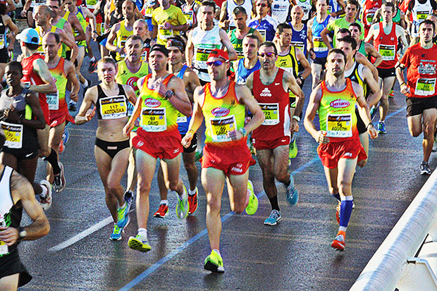

<!--este mixin es para las url de la barra de navegacion--><!--este es para cargar imagenes webp en los navegadores compatibles--><!--el navegador si no es compatible con webp,automaticamente va a cargar la imagen en formato png, jpg o jpeg--> <!--para embeber videos de youtube--><!DOCTYPE html><html lang="es"></html><head><meta charset="utf-8"><meta name="viewport" content="width=device-width,initial-scale=1"><title>Maraton</title><link rel="shortcut icon" type="image/png" href="img/favicon.png"><!--para cargar todos los archivos css se usa el each que los va ciclando y creando la etiqueta link--><!--este comentario build:css es para que la libreria useref apunte todos los links a ese archivo,--><!--porque despues de que se unan todas la librerias css en un solo archivo, las referencias van a quedar--><!--apuntando a archivos que no estan optimizados para el proyecto--><link rel="stylesheet" href="css/estilos.min.css"></head><body><header class="container-full header center"><nav class="container nav"><ul class="item"><!--asi se aplica el mixin--><li><a href="#maraton">Maraton</a></li><li><a href="#mito">Mito</a></li><li><a href="#olimpico">Olimpico</a></li><li><picture><source srcset="img/webp/logo-maraton.webp" type="image/webp"></picture></li><li><a href="#mayores">Mayores</a></li><li><a href="#top-ten">Top Ten</a></li><li><a href="#inspirate">Inspirate</a></li></ul></nav></header><section class="container section" id="maraton"><h1 class="title center animated wow zoomIn">Maraton</h1><article class="item ph12 lg8 mauto animated wow fadeInRightBig"><p></p>Un maratón es una carrera de larga distancia que consiste en correr una distancia de 42 195 metros <b>(42 km 195 m)</b>. Forma parte del programa de atletismo en los Juegos Olímpicos desde Atenas 1896, en la categoría masculina, y desde Los Ángeles 1984, en la categoría femenina. Su origen se encuentra en el mito de la gesta del soldado griego <b>Filípides</b>, quien en el año 490 a. C. habría muerto de fatiga tras haber corrido unos 37 km desde Maratón hasta Atenas para anunciar la victoria sobre el ejército persa. En realidad Filípides recorrió el camino desde Atenas hasta Esparta para pedir refuerzos, lo que serían unos 213 kilómetros. Aun así, el mito ganó mucha popularidad sobre lo que realmente sucedió.<picture><source srcset="img/webp/maraton-intro.webp" type="image/webp"></picture></article></section><section class="container section" id="mito"><h2 class="title center animated wow zoomIn">El Mito Griego</h2><article class="item ph12 lg8 mauto animated wow fadeInLeftBig"><p></p>asdasd adasdasda asdasdaddsa asdasdsadsadasdsadsa asdasdsadasdsasd <b>sdfsdfdsfsdfs</b> asdqwe12312eqwd dasdqewfrger erfeferferfe <b>wewewe</b> adawwrwetwe vdfgdfgdgtr e54645eerte sd asdqwe12312eqwd dasdqewfrger erfeferferfe <b>wewewe</b> adawwrwetwe vdfgdfgdgtr e54645eerte sd<picture><source srcset="img/webp/maraton-atenas.webp" type="image/webp"></picture>asdqwe12312eqwd dasdqewfrger erfeferferfe <b>wewewe</b> adawwrwetwe vdfgdfgdgtr e54645eerte sd asdqwe12312eqwd dasdqewfrger erfeferferfe <b>wewewe</b> adawwrwetwe vdfgdfgdgtr e54645eerte sd<picture><source srcset="img/webp/filipides.webp" type="image/webp"></picture>asdqwe12312eqwd dasdqewfrger erfeferferfe <b>wewewe</b> adawwrwetwe vdfgdfgdgtr e54645eerte sd asdqwe12312eqwd dasdqewfrger erfeferferfe <b>wewewe</b> adawwrwetwe vdfgdfgdgtr e54645eerte sd<picture><source srcset="img/webp/atenas-sparta.webp" type="image/webp"></picture></article></section><section class="container section" id="olimpico"><h1 class="title center animated wow zoomIn">Maraton Olimpico</h1><article class="item ph12 lg8 mauto animated wow fadeInRightBig"><picture><source srcset="img/webp/aros-olimpicos.webp" type="image/webp"></picture><p></p>asdasd adasdasda asdasdaddsa asdasdsadsadasdsadsa asdasdsadasdsasd <b>sdfsdfdsfsdfs</b> asdqwe12312eqwd dasdqewfrger erfeferferfe <b>wewewe</b> adawwrwetwe vdfgdfgdgtr e54645eerte sd asdqwe12312eqwd dasdqewfrger erfeferferfe <b>wewewe</b> adawwrwetwe vdfgdfgdgtr e54645eerte sd<picture><source srcset="img/webp/maraton-londres.webp" type="image/webp"></picture><p></p>asdasd adasdasda asdasdaddsa asdasdsadsadasdsadsa asdasdsadasdsasd <b>sdfsdfdsfsdfs</b> asdqwe12312eqwd dasdqewfrger erfeferferfe <b>wewewe</b> adawwrwetwe vdfgdfgdgtr e54645eerte sd asdqwe12312eqwd dasdqewfrger erfeferferfe <b>wewewe</b> adawwrwetwe vdfgdfgdgtr e54645eerte sd<picture><source srcset="img/webp/keep-calm.webp" type="image/webp"></picture></article></section><section class="container section" id="mayores"><h2 class="title center animated wow zoomIn">Maratones Mayores</h2><article class="item ph12 lg8 mauto animated wow fadeInLeftBig"><p></p>Los <a href="https://www.worldmarathonmajors.com/" target="_blank">World Marathon Majors</a> asdqwe12312eqwd dasdqewfrger erfeferferfe <b>wewewe</b> adawwrwetwe vdfgdfgdgtr e54645eerte sd<div class="owl-carousel owl-theme"><div><picture><source srcset="img/webp/berlin-logo.webp" type="image/webp"></picture></div><div><picture><source srcset="img/webp/boston-logo.webp" type="image/webp"></picture></div><div><picture><source srcset="img/webp/chicago-logo.webp" type="image/webp"></picture></div><div><picture><source srcset="img/webp/awmm-medalla.webp" type="image/webp"></picture></div><div><picture><source srcset="img/webp/londres-logo.webp" type="image/webp"></picture></div><div><picture><source srcset="img/webp/new-york-logo.webp" type="image/webp"></picture></div><div><picture><source srcset="img/webp/tokyo-logo.webp" type="image/webp"></picture></div></div><ul><li><a href="http://wSww.bmw-berlin-maraton.com/en" target="_blank"><b>Maraton de Berlin:</b></a> asdasdasd</li></ul></article></section><section class="container section" id="top-ten"><h2 class="title center animated wow zoomIn"><i class="fa fa-trophy"></i> Top Ten <i class="fa fa-trophy"></i></h2><article class="item ph12-lg8 mauto animated wow fadeInRightBig"><h3 class="center"><i class="fa fa-female"></i> Femenino</h3><picture><source srcset="img/webp/top-ten-femenino.webp" type="image/webp"></picture><h3 class="center"><i class="fa fa-male"></i> Masculino</h3><picture><source srcset="img/webp/top-ten-masculino.webp" type="image/webp"></picture><h3 class="center"><i class="fa fa-bolt"></i> Dennis Kimetto El hombre mas rapido del mundo</h3><iframe class="youtube" src="https://www.youtube.com/embed/Vh2dwJ80Edo" frameborder="0" allowfullscreen="allowfullscreen"></iframe></article></section><section class="container section" id="inspirate"><h2 class="title center animated wow zoomIn">Inspirate</h2><article class="item ph12 lg8 mauto animated wow fadeInLeftBig"><h3 class="center">Gente corriendo maraton</h3><iframe class="youtube" src="https://www.youtube.com/embed/7xbikKIaqmg" frameborder="0" allowfullscreen="allowfullscreen"></iframe><h3 class="center">A world transformed</h3><iframe class="youtube" src="https://www.youtube.com/embed/lOCFYBvpJ6s" frameborder="0" allowfullscreen="allowfullscreen"></iframe><h3 class="center">Maraton CDMX</h3><iframe class="youtube" src="https://www.youtube.com/embed/vjfEsyH1Y4A" frameborder="0" allowfullscreen="allowfullscreen"></iframe></article></section><!--para cargar todos los archivos js con un each, que va creando las etiquetas script--><!--este comentario build:js es para que la libreria useref apunte todos los scripts a ese archivo,--><!--porque despues de que se unan todas la librerias js en un solo archivo, las referencias van a quedar--><!--apuntando a archivos que no estan optimizados para el proyecto--><script src="js/codigos.min.js"></script></body>